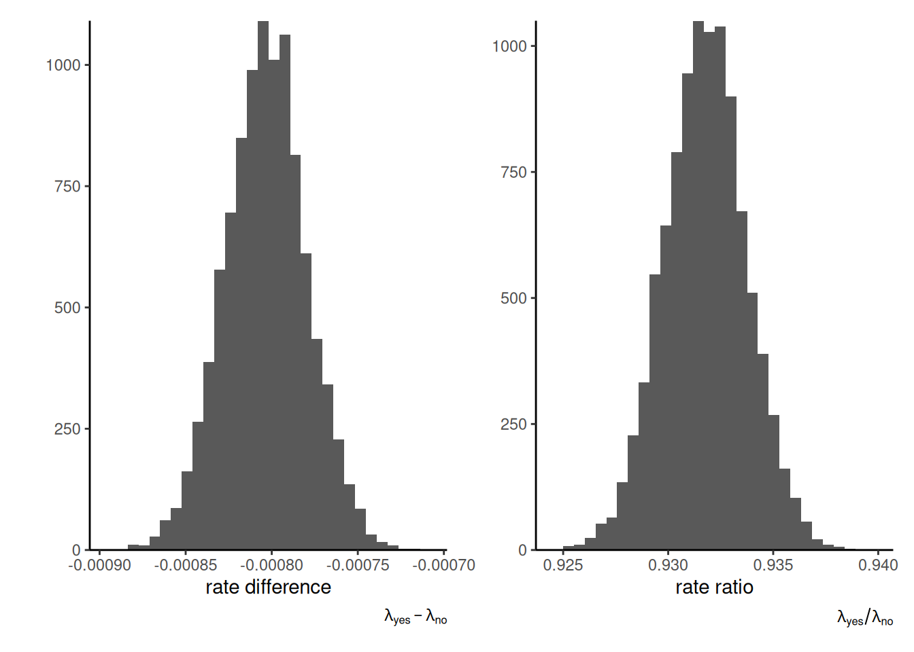
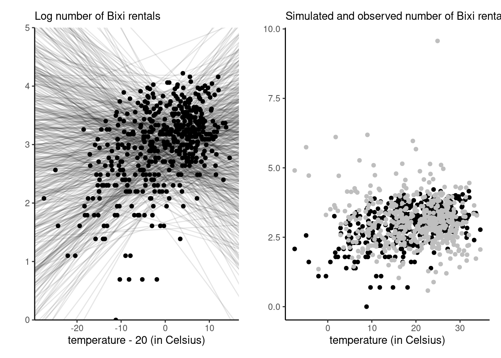
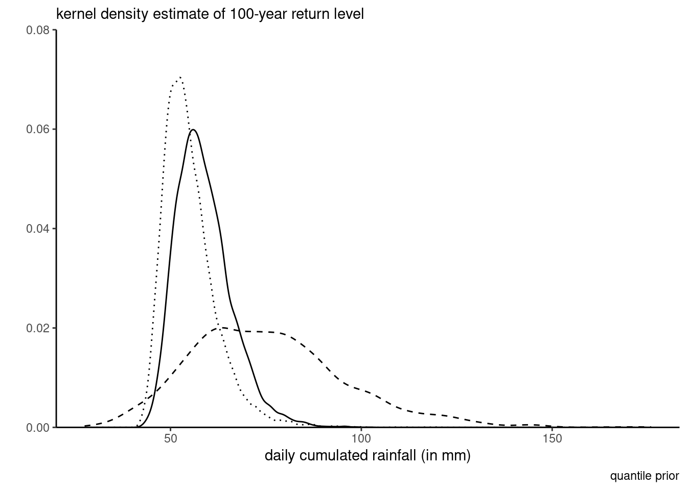
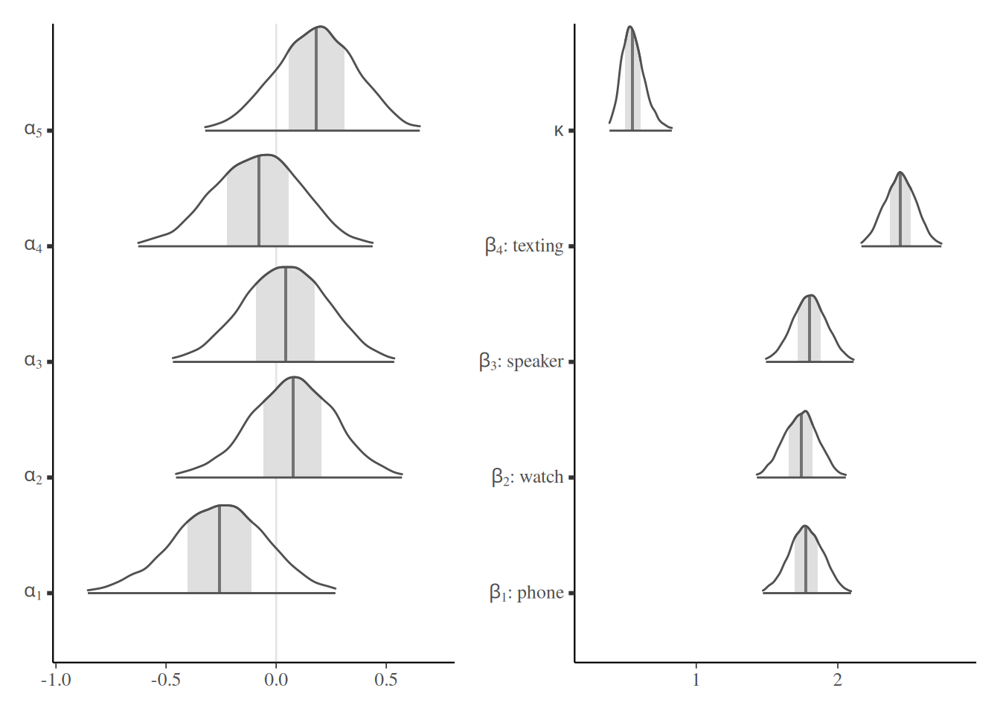
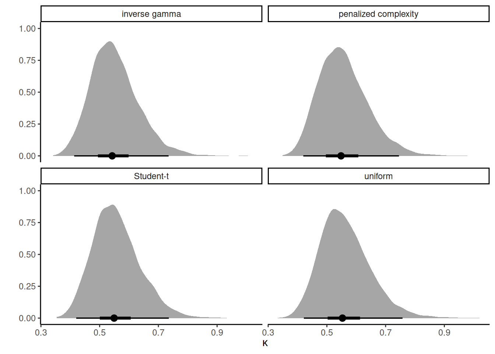

| headline | impressions | clicks |
|---|---|---|
| H1 | 3060 | 49 |
| H2 | 2982 | 20 |
| H3 | 3112 | 31 |
| H4 | 3083 | 9 |
2 Priors
The posterior distribution combines two ingredients: the likelihood and the prior. If the former is a standard ingredient of any likelihood-based inference, prior specification requires some care. The purpose of this chapter is to consider different standard way of constructing prior functions, and to specify the parameters of the latter: we term these hyperparameters.
2.1 Conjugate priors
In very simple models, there may exists prior densities that result in a posterior distribution of the same family. We can thus directly extract characteristics of the posterior. Conjugate priors are chosen for computational convenience and because interpretation is convenient, as the parameters of the posterior will often be some weighted average of prior and likelihood component.
Definition 2.1 A prior density \(p(\boldsymbol{\theta})\) is conjugate for likelihood \(L(\boldsymbol{\theta}; \boldsymbol{y})\) if the product \(L(\boldsymbol{\theta}; \boldsymbol{y})p(\boldsymbol{\theta})\), after renormalization, is of the same parametric family as the prior.
Exponential families (including the binomial, Poisson, exponential, Gaussian distributions) admit conjugate priors1
Example 2.1 (Conjugate prior for the binomial model) The binomial log density with \(y\) successes out of \(n\) trials is proportional to \[\begin{align*} y \log(p) + (n-y) \log(1-p) = y\log\left( \frac{p}{1-p}\right) + n \log(1-p) \end{align*}\] with canonical parameter \(\mathrm{logit}(p)\).2 The binomial distribution is thus an exponential family.
Since the density of the binomial is of the form \(p^y(1-p)^{n-y}\), the beta distribution \(\mathsf{Be}(\alpha, \beta)\) with density \[f(x) \propto x^{\alpha-1} (1-x)^{\beta-1}\] is the conjugate prior.
The beta distribution is also the conjugate prior for the negative binomial, geometric and Bernoulli distributions, since their likelihoods are all proportional to that of the beta. The fact that different sampling schemes that result in proportional likelihood functions give the same inference is called likelihood principle.
Example 2.2 (Conjugate prior for the Poisson model) The Poisson distribution with mean \(\mu\) has log density proportional to \(f(y; \mu) \propto y\log(\mu) -\mu\), so is an exponential family with natural parameter \(\log(\mu)\). The gamma density, \[ f(x) \propto \beta^{\alpha}/\Gamma(\alpha)x^{\alpha-1} \exp(-\beta x)\] with shape \(\alpha\) and rate \(\beta\) is the conjugate prior for the Poisson. For an \(n\)-sample of independent observations \(\mathsf{Po}(\mu)\) observations with \(\mu \sim \mathsf{Ga}(\alpha, \beta)\), the posterior is \(\mathsf{Ga}(\sum_{i=1}^n y_i + \alpha, \beta + n)\).
Knowing the analytic expression for the posterior can be useful for calculations of the marginal likelihood, as Example 2.3 demonstrates.
Example 2.3 (Negative binomial as a Poisson mixture)
One restriction of the Poisson model is that the restriction on its moments is often unrealistic. The most frequent problem encountered is that of overdispersion, meaning that the variability in the counts is larger than that implied by a Poisson distribution.
One common framework for handling overdispersion is to have \(Y \mid \Lambda = \lambda \sim \mathsf{Po}(\lambda)\), where the mean of the Poisson distribution is itself a positive random variable with mean \(\mu\), if \(\Lambda\) follows a conjugate gamma distribution with shape \(k\mu\) and rate \(k>0\), \(\Lambda \sim \mathsf{Ga}(k\mu, k)\), the posterior \(\Lambda \mid Y=y \sim \mathsf{Ga}(k\mu + y, k+1)\).
Since the joint density of \(Y\) and \(\Lambda\) can be written \[ p(y, \lambda) = p(y \mid \lambda)p(\lambda) = p(\lambda \mid y) p(y) \] we can isolate the marginal density \[\begin{align*} p(y) &= \frac{p(y \mid \lambda)p(\lambda)}{p(\lambda \mid y)} \\&= \frac{\frac{\lambda^y\exp(-\lambda)}{\Gamma(y+1)} \frac{k^{k\mu}\lambda^{k\mu-1}\exp(-k\lambda)}{\Gamma(k\mu)}}{ \frac{(k+1)^{k\mu+y}\lambda^{k\mu+y-1}\exp\{-(k+1)\lambda\}}{\Gamma(k\mu+y)}}\\ &= \frac{\Gamma(k\mu+y)}{\Gamma(k\mu)\Gamma(y+1)}k^{k\mu} (k+1)^{-k\mu-y}\\&= \frac{\Gamma(k\mu+y)}{\Gamma(k\mu)\Gamma(y+1)}\left(1-\frac{1}{k+1}\right)^{k\mu} \left(\frac{1}{k+1}\right)^y \end{align*}\] and this is the density of a negative binomial distribution with probability of success \(1/(k+1)\). We can thus view the negative binomial as a Poisson mean mixture.
By the laws of iterated expectation and iterative variance, \[\begin{align*} \mathsf{E}(Y) &= \mathsf{E}_{\Lambda}\{\mathsf{E}(Y \mid \Lambda\} \\& = \mathsf{E}(\Lambda) = \mu\\ \mathsf{Va}(Y) &= \mathsf{E}_{\Lambda}\{\mathsf{Va}(Y \mid \Lambda)\} + \mathsf{Va}_{\Lambda}\{\mathsf{E}(Y \mid \Lambda)\} \\&= \mathsf{E}(\Lambda) + \mathsf{Va}(\Lambda) \\&= \mu + \mu/k. \end{align*}\] The marginal distribution of \(Y\), unconditionally, has a variance which exceeds its mean, as \[\begin{align*} \mathsf{E}(Y) = \mu, \qquad \mathsf{Va}(Y) = \mu (1+1/k). \end{align*}\] In a negative binomial regression model, the term \(k\) is a dispersion parameter, which is fixed for all observations, whereas \(\mu = \exp(\boldsymbol{\beta}\mathbf{X})\) is a function of covariates \(\mathbf{X}\). As \(k \to \infty\), the distribution of \(\Lambda\) degenerates to a constant at \(\mu\) and we recover the Poisson model.
Example 2.4 (Posterior rates for A/B tests using conjugate Poisson model) Upworthy.com, a US media publisher, revolutionized headlines online advertisement by running systematic A/B tests to compare the different wording of headlines, placement and image and what catches attention the most. The Upworthy Research Archive (Matias et al. 2021) contains results for 22743 experiments, with a click through rate of 1.58% on average and a standard deviation of 1.23%. The clickability_test_id gives the unique identifier of the experiment, clicks the number of conversion out of impressions. See Section 8.5 of Alexander (2023) for more details about A/B testing and background information.
Consider an A/B test from November 23st, 2014, that compared four different headlines for a story on Sesame Street workshop with interviews of children whose parents were in jail and visiting them in prisons. The headlines tested were:
- Some Don’t Like It When He Sees His Mom. But To Him? Pure Joy. Why Keep Her From Him?
- They’re Not In Danger. They’re Right. See True Compassion From The Children Of The Incarcerated.
- Kids Have No Place In Jail … But In This Case, They Totally Deserve It.
- Going To Jail Should Be The Worst Part Of Their Life. It’s So Not. Not At All.
At first glance, the first and third headlines seem likely to lead to a curiosity gap. The wording of the second is more explicit (and searchable), whereas the first is worded as a question.
We model the conversion rate \(\lambda_i\) for each headline separately using a Poisson distribution and compare the posterior distributions for all four choices. Using a conjugate prior and selecting the parameters by moment matching yields approximately \(\alpha = 1.64\) and \(\beta = 0.01\) for the hyperparameters.

We can visualize the posterior distributions. In this context, the large sample size lead to the dominance of the likelihood contribution \(p(Y_i \mid \lambda_i) \sim \mathsf{Po}(n_i\lambda_i)\) relative to the prior. We can see there is virtually no overlap between different rates for headers H1 (preferred) relative to H4 (least favorable). The probability that the conversion rate for Headline 3 is higher than Headline 1 can be approximated by simulating samples from both posteriors and computing the proportion of times one is larger: we get 1.7% for H3 relative to H1, indicating a clear preference for the first headline H1.
Example 2.5 (Should you phrase your headline as a question?) We can also consider aggregate records for Upworthy, as Alexander (2023) did. The upworthy_question database contains a balanced sample of all headlines where at least one of the choices featured a question, with at least one alternative statement. Whether a headline contains a question or not is determined by querying for the question mark. We consider aggregated counts for all such headlines, with the question factor encoding whether there was a question, yes or no. For simplicity, we treat the number of views as fixed, but keep in mind that A/B tests are often sequential experiments with a stopping rule.3
We model first the rates using a Poisson regression; the corresponding frequentist analysis would include an offset to account for differences in views. If \(\lambda_{j}\) \((j=1, 2)\) are the average rate for each factor level (yes and no), then \(\mathsf{E}(Y_{ij}/n_{ij}) = \lambda_j\). In the frequentist setting, we can fit a simple Poisson generalized linear regression model with an offset term and a binary variable.
data(upworthy_question, package = "hecbayes")
poismod <- glm(
clicks ~ offset(log(impressions)) + question,
family = poisson(link = "log"),
data = upworthy_question)
coef(poismod)(Intercept) questionno
-4.51264669 0.07069677 The coefficients represent the difference in log rate (multiplicative effect) relative to the baseline rate, with an increase of 6.3 percent when the headline does not contain a question. A likelihood ratio test can be performed by comparing the deviance of the null model (intercept-only), indicating strong evidence that including question leads to significatively different rates. This is rather unsurprising given the enormous sample sizes.
Consider instead a Bayesian analysis with conjugate prior: we model separately the rates of each group (question or not). Suppose we think apriori that the click-rate is on average 1%, with a standard deviation of 2%, with no difference between questions or not. This would translate, using moment matching, into a gamma prior distribution \(p(\lambda_j)\) with rate \(\beta = 0.04 = \mathsf{Var}_0/\mathsf{E}_0\) and shape \(\alpha = 2.5\) (\(j=1, 2\)). If \(\lambda_{j}\) is the average rate for each factor level (yes and no), then \(\mathsf{E}(Y_{ij}/n_{ij}) = \lambda_j\) so the log likelihood is proportional, as a function of \(\lambda_1\) and \(\lambda_2\), to \[\begin{align*} \ell(\boldsymbol{\lambda}; \boldsymbol{y}, \boldsymbol{n}) \stackrel{\boldsymbol{\lambda}}{\propto} \sum_{i=1}^n \sum_{j=1}^2 y_{ij}\log \lambda_j - \lambda_jn_{ij} \end{align*}\] and we can recognize that the posterior for \(\lambda_i\) is gamma with shape \(\alpha + \sum_{i=1}^n y_{ij}\) and rate \(\beta + \sum_{i=1}^n n_{ij}.\) For inference, we thus only need to select hyperparameters and calculate the total number of clicks and impressions per group. We can then consider the posterior difference \(\lambda_1 - \lambda_2\) or, to mimic the Poisson multiplicative model, of the ratio \(\lambda_1/\lambda_2\). The former suggests very small differences, but one must keep in mind that rates are also small. The ratio, shown in the right-hand panel of Figure 2.2, gives a more easily interpretable portrait that is in line with the frequentist analysis.

To get an approximation to the posterior mean of the ratio \(\lambda_1/\lambda_2\), it suffices to draw independent observations from their respective posterior, compute the ratio and take the sample mean of those draws. We can see that the sampling distribution of the ratio is nearly symmetrical, so we can expect Wald intervals to perform well should one be interested in building confidence intervals. This is however hardly surprising given the sample size at play.
Example 2.6 (Conjugate prior for Gaussian mean with known variance) Consider an \(n\) simple random sample of independent and identically distributed Gaussian variables with mean \(\mu\) and standard deviation \(\sigma\), denoted \(Y_i \sim \mathsf{No}(\mu, \sigma^2)\). We pick a Gaussian prior for the location parameter, \(\mu \sim \mathsf{No}(\nu, \tau^2)\) where we assume \(\mu, \tau\) are fixed hyperparameter values. For now, we consider only inference for \(p(\mu \mid \sigma)\): discarding any term that is not a function of \(\mu\), the conditional posterior is \[\begin{align*} p(\mu \mid \sigma) &\propto \exp\left\{ -\frac{1}{2\sigma^2}\sum_{i=1}^n (y_{i}-\mu)^2\right\} \exp\left\{-\frac{1}{2\tau^2}(\mu - \nu)^2\right\} \\&\propto p(\sigma)\sigma^{-1} \exp\left\{\left(\frac{\sum_{i=1}^n y_{i}}{\sigma^2} + \frac{\nu}{\tau^2}\right)\mu - \left( \frac{n}{2\sigma^2} +\frac{1}{2\tau^2}\right)\mu^2\right\}. \end{align*}\] The log of the posterior density conditional on \(\sigma\) is quadratic in \(\mu\), it must be a Gaussian distribution truncated over the positive half line. This can be seen by completing the square in \(\mu\), or by comparing this expression to the density of \(\mathsf{No}(\mu, \sigma^2)\), \[\begin{align*} f(x; \mu, \sigma) \stackrel{\mu}{\propto} \exp\left(-\frac{1}{2 \sigma^2}\mu^2 + \frac{x}{\sigma^2}\mu\right) \end{align*}\] we can deduce by matching mean and variance that the conditional posterior \(p(\mu \mid \sigma)\) is Gaussian with reciprocal variance (precision) \(n/\sigma^2 + 1/\tau^2\) and mean \((n\overline{y}\tau^2 + \nu \sigma^2)/(n\tau^2 + \sigma^2)\). The precision is an average of that of the prior and data, but assigns more weight to the latter, which increases linearly with the sample size \(n\). Likewise, the posterior mean is a weighted average of prior and sample mean, with weights proportional to the relative precision.
The exponential family is quite large; Fink (1997) A Compendium of Conjugate Priors gives multiple examples of conjugate priors and work out parameter values.
In general, unless the sample size is small and we want to add expert opinion, we may wish to pick an uninformative prior, i.e., one that does not impact much the outcome. For conjugate models, one can often show that the relative weight of prior parameters (relative to the random sample likelihood contribution) becomes negligible by investigating their relative weights.
2.2 Uninformative priors
Definition 2.2 (Proper prior) We call a prior function proper if it’s integral is finite over the parameter space; such prior function automatically leads to a valid posterior.
The best example of prior priors arise from probability density function. We can still employ this rule for improper priors: for example, taking \(\alpha, \beta \to 0\) in the beta prior leads to a prior proportional to \(x^{-1}(1-x)^{-1}\), the integral of which diverges on the unit interval \([0,1]\). However, as long as the number of success and the number of failures is larger than 1, meaning \(k \geq 1, n-k \geq 1\), the posterior distribution would be proper, i.e., integrable. To find the posterior, normalizing constants are also superfluous.
Many uninformative priors are flat, or proportional to a uniform on some subset of the real line and therefore improper. It may be superficially tempting to set a uniform prior on a large range to ensure posterior property, but the major problem is that a flat prior may be informative in a different parametrization, as the following example suggests.
Example 2.7 (Transformation of flat prior for scales) Consider the parameter \(\log(\tau) \in \mathbb{R}\) and the prior \(p( \log \tau) \propto 1\). If we reparametrize the model in terms of \(\tau\), the new prior (including the Jacobian of the transformation) is \(\tau^{-1}\)
Some priors are standard and widely used. In location scale families with location \(\nu\) and scale \(\tau\), the density is such that \[\begin{align*} f(x; \nu, \tau) = \frac{1}{\tau} f\left(\frac{x - \nu}{\tau}\right), \qquad \nu \in \mathbb{R}, \tau >0. \end{align*}\] We thus wish to have a prior so that \(p(\tau) = c^{-1}p(\tau/c)\) for any scaling \(c>0\), whence it follows that \(p(\tau) \propto \tau^{-1}\), which is uniform on the log scale.
The priors \(p(\nu) \propto 1\) and \(p(\tau) \propto \tau^{-1}\) are both improper but lead to location and scale invariance, hence that the result is the same regardless of the units of measurement.
One criticism of the Bayesian approach is the arbitrariness of prior functions. However, the role of the prior is often negligible in large samples (consider for example the posterior of exponential families with conjugate priors). Moreover, the likelihood is also chosen for convenience, and arguably has a bigger influence on the conclusion. Data fitted using a linear regression model seldom follow Gaussian distributions conditionally, in the same way that the linearity is a convenience (and first order approximation).
Definition 2.3 (Jeffrey’s prior) In single parameter models, taking a prior function for \(\theta\) proportional to the square root of the determinant of the information matrix, \(p(\theta) \propto |\imath(\theta)|^{1/2}\) yields a prior that is invariant to reparametrization, so that inferences conducted in different parametrizations are equivalent.4
To see this, consider a bijective transformation \(\theta \mapsto \vartheta\). Under the reparametrized model and suitable regularity conditions5, the chain rule implies that \[\begin{align*} i(\vartheta) &= - \mathsf{E} \left(\frac{\partial^2 \ell(\vartheta)}{\partial^2 \vartheta}\right) \\&= - \mathsf{E}\left(\frac{\partial^2 \ell(\theta)}{\partial \theta^2}\right) \left( \frac{\mathrm{d} \theta}{\mathrm{d} \vartheta} \right)^2 + \mathsf{E}\left(\frac{\partial \ell(\theta)}{\partial \theta}\right) \frac{\mathrm{d}^2 \theta}{\mathrm{d} \vartheta^2} \end{align*}\] Since the score has mean zero, \(\mathsf{E}\left\{\partial \ell(\theta)/\partial \theta\right\}=0\) and the rightmost term vanishes. We can thus relate the Fisher information in both parametrizations, with \[\begin{align*} \imath^{1/2}(\vartheta) = \imath^{1/2}(\theta) \left| \frac{\mathrm{d} \theta}{\mathrm{d} \vartheta} \right|, \end{align*}\] implying invariance.
Most of the times, Jeffrey’s prior is improper. For the binomial model, it can be viewed as a limiting conjugate beta prior with \(\alpha, \beta\to 0\)). Unfortunately, in multiparameter models, the system isn’t invariant to reparametrization if we consider the determinant of the Fisher information.
Example 2.8 (Jeffrey’s prior for the binomial distribution) Consider the binomial distribution \(f(y; \theta, n) \propto \theta^y(1-\theta)^{n-y}\mathsf{I}_{\theta \in [0,1]}\). The negative of the second derivative of the log likelihood with respect to \(p\) is \[\jmath(\theta) = - \partial^2 \ell(\theta; y) / \partial \theta^2 = y/\theta^2 + (1-y)/(1-\theta)^2\] and since \(\mathsf{E}(Y)=n\theta\), the Fisher information is \[\imath(\vartheta) = \mathsf{E}\{\jmath(\theta)\}=n/\theta + n/(1-\theta) = n/\{\theta(1-\theta)\}\] Jeffrey’s prior is thus \(p(\theta) \propto \theta^{-1}(1-\theta)^{-1}\).
2.3 Jeffrey’s prior for the normal distribution
Check that for the Gaussian distribution \(\mathsf{No}(\mu, \sigma^2)\), the Jeffrey’s prior obtained by treating each parameter as fixed in turn, are \(p(\mu) \propto 1\) and \(p(\sigma) \propto 1/\sigma\), which also correspond to the default uninformative priors for location-scale families.
Example 2.9 (Jeffrey’s prior for the Poisson distribution) The Poisson distribution with \(\ell(\lambda) \propto -\lambda + y\log \lambda\), with second derivative \(-\partial^2 \ell(\lambda)/\partial \lambda^2 = y/\lambda^2\). Since the mean of the Poisson distribution is \(\lambda\), the Fisher information is \(\imath(\lambda) = \lambda^{-1}\) and Jeffrey’s prior is \(\lambda^{-1/2}\).
2.4 Prior simulation
Oftentimes, expert elicitation is difficult and it is hard to grasp what the impacts of the hyperparameters are. One way to see if the priors are reasonable is to sample values from them and generate new observations, resulting in prior predictive draws.
The prior predictive is \(\int_{\boldsymbol{\Theta}} p(y \mid \boldsymbol{\theta}) p(\boldsymbol{\theta}) \mathrm{d} \boldsymbol{\theta}\): we can simulate outcomes from it by first drawing parameter values from the prior, then sampling new observations from the distribution in the likelihood and keeping only the latter.
Example 2.10 Consider the daily number of Bixi bike sharing users for 2017–2019 at the Edouard Montpetit station next to HEC: we can consider a simple linear regression with log counts as a function of temperature,6 \[\log (\texttt{nusers}) \sim \mathsf{No}_{+}\{\beta_0 + \beta_1 (\texttt{temp}-20), \sigma^2\}.\] The \(\beta_1\) slope measures units in degree Celsius per log number of person.
The hyperparameters depend of course on the units of the analysis, unless one standardizes response variable and explanatories: it is easier to standardize the temperature so that we consider deviations from, say 20\(^{\circ}\)C, which is not far from the observed mean in the sample. After some tuning, the independent priors \(\beta_0 \sim \mathsf{No}(\overline{y}, 0.5^2)\), \(\beta_1 \sim \mathsf{No}(0, 0.05^2)\) and \(\sigma \sim \mathsf{Exp}(3)\) seem to yield plausible outcomes and relationships.7

We can draw regression lines from the prior, as in the left panel of Figure 2.3: while some of the negative relationships appear unlikely after seeing the data, the curves all seem to pass somewhere in the cloud of point. By contrast, a silly prior is one that would result in all observations being above or below the regression line, or yield values that are much too large near the endpoints of the explanatory variable. Indeed, given the number of bikes for rental is limited (a docking station has only 20 bikes), it is also sensible to ensure that simulations do not return overly large numbers. The maximum number of daily users in the sample is 68, so priors that return simulations with more than 200 (rougly 5.3 on the log scale) are not that plausible. The prior predictive draws can help establish this and the right panel of Figure 2.3 shows that, expect for the lack of correlation between temperature and number of users, the simulated values from the prior predictive are plausible even if overdispersed.
2.5 Informative priors
One strength of the Bayesian approach is the capability of incorporating expert and domain-based knowledge through priors. Often, these will take the form of moment constraints, so one common way to derive a prior is to perform moment matching to related ellicited quantities with moments of the prior distribution. It may be easier to set priors on a different scale than those of the observations, as Example 2.11 demonstrates.
Example 2.11 (Gamma quantile difference priors for extreme value distributions) The generalized extreme value distribution arises as the limiting distribution for the maximum of \(m\) independent observations from some common distribution \(F\). The \(\mathsf{GEV}(\mu, \sigma, \xi)\) distribution is a location-scale with distribution function \[\begin{align*} F(x) = \exp\left[ - \left\{1+\xi(x-\mu)/\sigma\right\}^{-1/\xi}_{+}\right] \end{align*}\] where \(x_{+} = \max\{0, x\}\).
Inverting the distribution function yields the quantile function \[\begin{align*} Q(p) \mu + \sigma \frac{(-\log p)^{-\xi}-1}{\xi} \end{align*}\]
In environmental data, we often model annual maximum. Engineering designs are often specified in terms of the \(k\)-year return levels, defined as the quantile of the annual maximum exceeded with probability \(1/k\) in any given year. Using a \(\mathsf{GEV}\) for annual maximum, Coles and Tawn (1996) proposed modelling annual daily rainfall and specifying a prior on the quantile scale \(q_1 < q_2 < q_3\) for tail probabilities \(p_1> p_2 > p_3\). To deal with the ordering constraints, gamma priors are imposed on the differences \(q_1 - o \sim \mathsf{Ga}(\alpha_1, \beta_1)\), \(q_2 - q_1 \sim \mathsf{Ga}(\alpha_2, \beta_2)\) and \(q_3-q_2 \sim \mathsf{Ga}(\alpha_3, \beta_3)\), where \(o\) is the lower bound of the support. The prior is thus of the form
\[\begin{align*} p(\boldsymbol{q}) \propto q_1^{\alpha_1-1}\exp(-\beta_1 q_1) \prod_{i=2}^3 (q_i-q_{i-1})^{\alpha_i-1} \exp\{\beta_i(q_i-q_{i-1})\}. \end{align*}\] where \(0 \leq q_1 \leq q_2 \leq q_3\). The fact that these quantities refer to moments or risk estimates which practitioners often must compute as part of regulatory requirements makes it easier to specify sensible values for hyperparameters.
As illustrating example, consider maximum daily cumulated rainfall in Abisko, Sweden. The time series spans from 1913 until December 2014; we compute the 102 yearly maximum, which range from 11mm to 62mm, and fit a generalized extreme value distribution to these.
For the priors, suppose an expert elicits quantiles of the 10, 50 and 100 years return levels; say 30mm, 45mm and 70mm, respectively, for the median and likewise 40mm, 70mm and 120mm for the 90% percentile of the return levels. We can compute the differences and calculate the parameters of the gamma distribution through moment-matching: this gives roughly a shape of \(\alpha_1=18.27\) and \(\beta_1=0.6\), etc. Figure 2.4 shows the transfer from the prior predictive to the posterior distribution. The prior is much more dispersed and concentrated on the tail, which translates in a less peaked posterior than using a weakly informative prior (dotted line): the mode of the latter is slightly to the left and with lower density in the tail.

What would you do if we you had prior information from different sources? One way to combine these is through a mixture: given \(M\) different prior distributions \(p_m(\boldsymbol{\theta})\), we can assign each a positive weight \(w_m\) to form a mixture of experts prior through the linear combination \[ p(\boldsymbol{\theta}) \propto \sum_{m=1}^M w_m p_m(\boldsymbol{\theta})\]
2.6 Priors for regression models
Gaussian components are widespread: not only for linear regression models, but more generally for the specification of random effects that capture group-specific effects, residuals spatial or temporal variability. In the Bayesian paradigm, there is no difference between fixed effects \(\boldsymbol{\beta}\) and the random effect parameters: both are random quantities that get assigned priors.
It is generally good advice to center and scale explanatory variables and response vectors so they have approximately mean zero and unit variance, as this facilitates prior specification.
Andrew Gelman uses the following taxonomy for various levels of prior information: uninformative priors are generally flat or uniform priors with \(p(\beta) \propto 1\), vague priors are typically nearly flat even if propor, e.g., \(\beta \sim \mathsf{No}(0, 100)\), weakly informative priors provide little constraints \(\beta \sim \mathsf{No}(0, 10)\)), and informative prior are typically application-specific, but constrain the ranges. Uninformative and vague priors are not recommended.
If Gaussian priors are ubiquitous for the mean parameters \(\boldsymbol{\beta}\), priors for the scale are more contentious. Gelman (2006) recommends a Student-\(t\) distribution truncated below at \(0\), with low degrees of freedom.
The rationale for this choice comes from the simple two level model: \[\begin{align*} Y_{ij} &\sim \mathsf{No}(\mu + \alpha_j, \sigma^2), \qquad i=1,\ldots, n_j; j = 1, \ldots, J \\ \alpha_j &\sim \mathsf{No}(0, \tau^2_\alpha), \qquad j =1, \ldots, J \end{align*}\] Given \(\alpha, \mu, \sigma\) and the data \(\boldsymbol{y}\), the conditionally conjugate prior is inverse gamma. Standard inference with this parametrization is complicated, because there is strong dependence between parameters.
To reduce this dependence, one can consider an overparametrization in which \(\alpha_j = \xi \eta_j\) and \(\eta_j \sim \mathsf{No}(0, \tau^2_\eta)\), where now \(\tau_\alpha=|\xi|\tau_{\eta}\) so there is an additional parameter. Consider the likelihood conditional on \(\mu, \eta_j\): we have that \((y_{ij} - \mu)/\eta_j \sim \mathsf{No}(\xi, \sigma^2/\eta_j)\) so conditionally conjugate priors for \(\xi\) and \(\tau_\eta\) are respectively Gaussian an inverse-gamma. This translates into a prior distribution for \(\tau_\alpha\) which is that of the absolute value of a noncentral Student-\(t\) with location, scale and degrees of freedom \(\nu\). If we set the location to zero, the prior puts high mass at the origin, but is heavy tailed with polynomial decay. We recommend to set degrees of freedom so that the variance is heavy-tailed, e.g., \(\nu=3\). While this prior is not conjugate, it compares favorably to the \(\mathsf{IGa}(\epsilon, \epsilon)\) that used to be widespread with \(\epsilon>0\) typically set to \(0.01\) or \(0.001\), approaching an improper prior. Posterior inference is unfortunately sensitive to the value of \(\epsilon\) in hierarchical models when the random effect variance is close to zero, and more so when there are few levels for the groups since the relative weight of the prior relative to that of the likelihood contribution is then large.
Example 2.12 (Poisson random effect models) We consider data from an experimental study conducted at Tech3Lab on road safety. In Brodeur et al. (2021), 31 participants were asked to drive in a virtual environment; the number of road violation was measured for different type of distractions (phone notification, phone on speaker, texting and smartwatch). The data are balanced, with each participant exposed to each task exactly once.
We model the data using a Poisson mixed model to measure the number of violations, nviolation, with a fixed effect for task, which captures the type of distraction, and a random effect for participant id. The hierarchical model fitted for individual \(i\) and distraction type \(j\) is \[\begin{align*}
Y_{ij} &\sim \mathsf{Po}\{\mu = \exp(\beta_{j} + \alpha_i)\}, \qquad i = 1, \ldots, 31; j = 1, \ldots, 4\\
\beta_j &\sim \mathsf{No}(0, 100) \qquad j = 1, \ldots, 4\\
\alpha_i &\sim \mathsf{No}(0, \kappa^2); \qquad i=1, \ldots, 31
\kappa \sim \mathsf{St}_{+}(3)
\end{align*}\] so observations are conditionally independent given hyperparameters \(\alpha\) and \(\beta\).
In frequentist statistics, there is a distinction made in mixed-effect models between parameters that are treated as constants, termed fixed effects and corresponding in this example to \(\boldsymbol{\beta}\), and random effects, equivalent to \(\boldsymbol{\alpha}\). There is no such distinction in the Bayesian paradigm, except perhaps for the choice of prior.
We can look at some of posterior distribution of the 31 random effects (here the first five individuals) and the fixed effect parameters \(\boldsymbol{\beta}\), plus the variance of the random effect \(\kappa\): there is strong evidence that the latter is non-zero, suggesting strong heterogeneity between individuals. The distraction which results in the largest number of violation is texting, while the other conditions all seem equally distracting on average (note that there is no control group with no distraction to compare with, so it is hard to draw conclusions).

2.7 Penalized complexity priors
Oftentimes, there will be a natural family of prior density to impose on some model component, \(p(\boldsymbol{\theta} \mid \zeta)\), with hyperparameter \(\zeta\). The flexibility of the underlying construction leads itself to overfitting. Penalized complexity priors (Simpson et al. 2017) aim to palliate this by penalizing models far away from a simple baseline model, which correspond to a fixed value \(\zeta_0\). The prior will favour the simpler parsimonious model the more prior mass one places on \(\zeta_0\), which is in line with Occam’s razor principle.
To construct a penalized-complexity prior, we compute the Kullback–Leibler divergence between the model \(p_\zeta \equiv p(\boldsymbol{\theta} \mid \zeta)\) relative to the baseline with \(\zeta_0\), \(p_0 \equiv p(\boldsymbol{\theta} \mid \zeta_0)\); the Kullback–Leibler divergence is
\[ \mathsf{KL}(p_\zeta \Vert\, p_0)=\int p_\zeta \log\left(\frac{p_\zeta}{p_0}\right) \mathrm{d} \boldsymbol{\theta}. \] The distance between the prior densities is then set to \(d(\zeta) = \{2\mathsf{KL}(p_\zeta \mid\mid p_0)\}^{1/2}\). which is zero at the model with \(\zeta_0\). The PC prior then constructs an exponential prior on the distance scale, which after back-transformation gives \(p(\zeta \mid \lambda) = \lambda\exp(-\lambda d(\zeta)) \left| {\partial d(\zeta)}/{\partial \zeta}\right|\). To choose \(\lambda\), the authors recommend elicitation of a pair \((U, \alpha)\) such that \(\Pr(\lambda > U)=\alpha\).
Example 2.13 (Penalized complexity prior for random effects models) Simpson et al. (2017) give the example of a Gaussian prior for random effects \(\boldsymbol{\alpha}\), of the form \(\boldsymbol{\alpha} \mid \zeta \sim \mathsf{No}_J(\boldsymbol{0}_J, \zeta^2 \mathbf{I}_J)\) where \(\zeta_0=0\) corresponds to the absence of random subject-variability. The penalized complexity prior for the scale \(\zeta\) is then an exponential with rate \(\lambda\),8 with density \(p(\zeta \mid \lambda) = \lambda \exp(-\lambda \zeta)\). Using the recommendation for setting \(\lambda\), we get that \(\lambda = -\ln(\alpha/U)\) and this can be directly interpreted in terms of standard deviation of \(\zeta\); simulation from the prior predictive may also be used for calibration.
Example 2.14 (Penalized complexity prior for autoregressive model of order 1) Sørbye and Rue (2017) derive penalized complexity prior for the Gaussian stationary AR(1) model with autoregressive parameter \(\phi \in (-1,1)\), where \(Y_t \mid Y_{t-1}, \phi, \sigma^2 \sim \mathsf{No}(\phi Y_{t-1}, \sigma^2)\). There are two based models that could be of interest: one with \(\phi=0\), corresponding to lack of autocorrelation, and a static mean \(\phi=1\) for no change in time, which is not stationary. For the former, the penalized complexity prior is \[\begin{align*} p(\phi \mid \lambda) = \frac{\lambda}{2} \exp\left[-\lambda \left\{-\ln(1-\phi^2)\right\}^{1/2}\right] \frac{|\phi|}{(1-\phi^2)\left\{-\ln(1-\phi^2)\right\}^{1/2}}. \end{align*}\] One can set \(\lambda\) by considering plausible values by relating the parameter to the variance of the one-step ahead forecast error.
2.8 Sensitivity analysis
Do priors matter? The answer to that question depends strongly on the model, and how much information the data provides about hyperparameters. While this question is easily answered in conjugate models (the relative weight of hyperparameters relative to data can be derived from the posterior parameters), it is not so simple in hierarchical models, where the interplay between prior distributions is often more intricate. To see the impact, one often has to rely on doing several analyses with different values fr the prior and see the sensitivity of the conclusions to these changes, for example by considering a vague prior or modifying the parameters values (say halving or doubling). If the changes are immaterial, then this provides reassurance that our analyses are robust.
Example 2.15 To check the sensitivity of the conclusion, we revisit the modelling of the smartwatch experiment data using a Poisson regression and compare four priors: a uniform prior truncated to \([0, 10]\), an inverse gamma \(\mathsf{IG}(0.01, 0.01)\) prior, a penalized complexity prior such that the 0.95 percentile of the scale is 5, corresponding to \(\mathsf{Exp}(0.6)\). Since each distraction type appears 31 times, there is plenty of information to reliably estimate the dispersion \(\kappa\) of the random effects \(\alpha\): the different density plots in Figure 2.6 are virtually indistinguishable from one another.

A distribution belongs to an exponential family with parameter vector \(\boldsymbol{\theta} \in \mathbb{R}^D\) if it can be written as \[\begin{align*} f(y; \boldsymbol{\theta}) = \exp\left\{ \sum_{k=1}^K Q_k(\boldsymbol{\theta}) t_k(y) + D(\boldsymbol{\theta})\right\} \end{align*}\] and in particular, the support does not depend on unknown parameters. If we have an independent and identically distributed sample of observations \(y_1, \ldots, y_n\), the log likelihood is thus of the form \[\begin{align*} \ell(\boldsymbol{\theta}) = \sum_{k=1}^K \phi_k(\boldsymbol{\theta}) \sum_{i=1}^n t_k(y_i) + n D(\boldsymbol{\theta}), \end{align*}\] where the collection \(\sum_{i=1}^n t_k(y_i)\) (\(k=1, \ldots, K\)) are sufficient statistics and \(\phi_k(\boldsymbol{\theta})\) are the canonical parameters. The number of sufficient statistics are the same regardless of the sample size. Exponential families play a prominent role in generalized linear models, in which the natural parameters are modeled as linear function of explanatory variables. A log prior density with parameters \(\eta, \nu_1, \ldots, \nu_K\) that is proportional to \[\begin{align*} \log p(\boldsymbol{\theta}) \propto \eta D(\boldsymbol{\theta}) + \sum_{k=1}^K Q_k(\boldsymbol{\theta}) \nu_k \end{align*}\] is conjugate.↩︎
The canonical link function for Bernoulli gives rise to logistic regression model.↩︎
The stopping rule means that data stops being collected once there is enough evidence to determine if an option is more suitable, or if a predetermined number of views has been reached.↩︎
The Fisher information is linear in the sample size for independent and identically distributed data so we can derive the result for \(n=1\) without loss of generality.↩︎
Using Bartlett’s identity; Fisher consistency can be established using the dominated convergence theorem.↩︎
If counts are Poisson, then the log transform is variance stabilizing.↩︎
One can object to the prior parameters depending on the data, but an alternative would be to model centered data \(y-\overline{y}\), in which case the prior for the intercept parameter \(\beta_0\) would be zero.↩︎
Possibly truncated above if the support of \(\zeta\) has a finite upper bound.↩︎